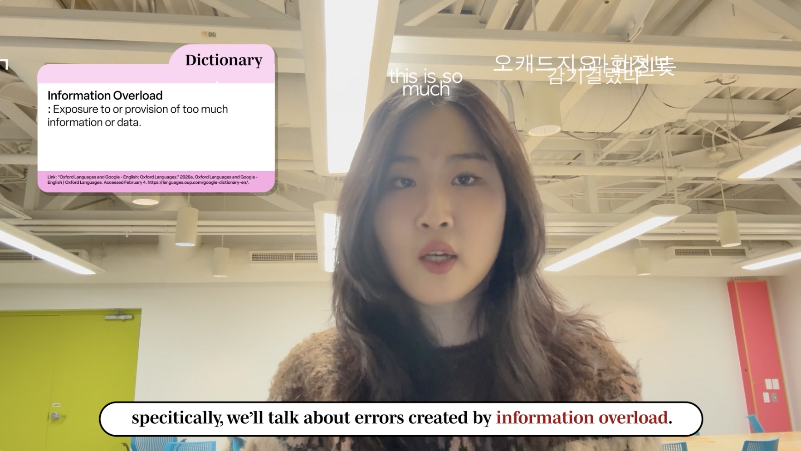
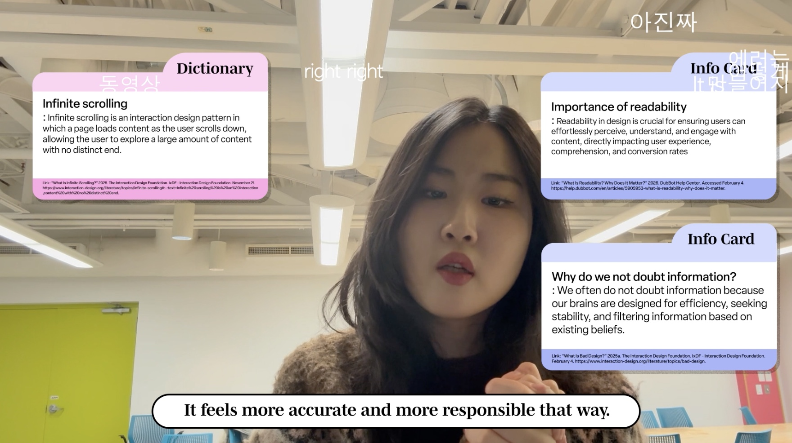
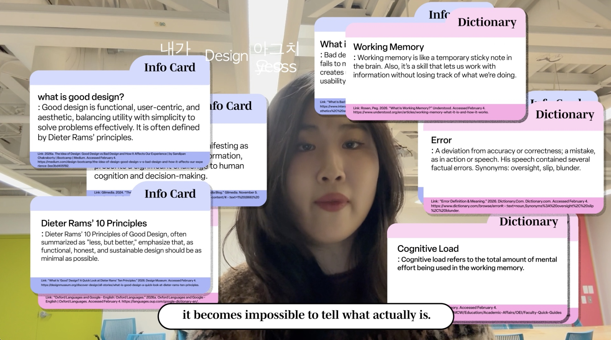

Project 1
Error
Information overload as a condition of error
Description
This project begins with the idea of error and develops it through overload. Rather than treating error as a single malfunction, the work approaches it as something produced by excessive information, interruption, and distraction.
The final outcome is a video in which pop-up windows, bullet comments, and layered sound interfere with the main message. The viewer does not simply watch a video about overload. The viewer is placed inside the condition itself.
Process
Drag the images freely


